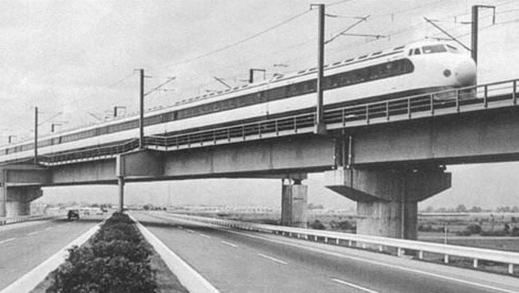
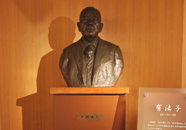

十河信二 (1884-1981)
"新干线不是简单的铁路，而是日本复兴的象征。"
历史影像

1964年东海道新干线开通仪式

坐在试制车辆驾驶席上的十河信二

十河信二纪念馆雕像
十河信二 - 日本新干线之父
十河信二（1884年5月14日 - 1981年10月3日），日本香川县出身，东京帝国大学法学部毕业。历任铁道大臣、日本国有铁道首任总裁，主导完成东海道新干线建设，被尊称为"日本铁路现代化之父"。
教育背景
1907年毕业于东京帝国大学法学部，主修行政法。在校期间系统学习德国铁路管理制度，毕业论文《铁路国有化与行政组织》获天皇御赐银表奖。
职业经历
- 1912年：入职铁道院，历任神户铁道管理局长、铁道大臣秘书官
- 1938年：升任铁道大臣，推动制定《战时铁路特别措置法》
- 1945年：主导战后铁路复兴，主持编制《日本国有铁道法》
- 1949年：出任日本国有铁道首任总裁（至1955年）
- 1956年：担任东海道新干线建设推进本部长
主要成就
新干线战略实施
1959年力排众议启动东海道新干线项目，突破技术封锁：
- 创新采用动力分散式列车
- 开发ATC自动列车控制装置
- 首创连续焊接无缝钢轨技术
1964年10月1日实现东京-新大阪515公里线路通车，创下210km/h世界最高速纪录。
铁路体制改革
1949年主导完成日本国有铁道公社改制：
- 建立独立核算制度
- 设立铁道技术研究所
- 制定全国标准轨距路网规划
推动日本铁路客货运输量在1955年恢复至战前水平。
历史影响
技术标准输出
新干线系统技术出口台湾高铁（2007）、英国HS1高速铁路（2007），促成日本在1970-2010年间获得37个国家铁路技术订单。
经济拉动效应
东海道新干线使东京-大阪间通勤时间从6.5小时缩短至3小时，直接促成太平洋工业带形成，贡献日本GDP年增长率提升1.2%（1965-1970）。
荣誉与纪念
- 1964年获颁勋一等旭日大绶章
- 1982年日本国铁设立"十河信二纪念奖"（铁道界最高荣誉）
- 东京站丸之内站房设立纪念铭板
- JR东海公司定期运行"十河信二纪念号"列车